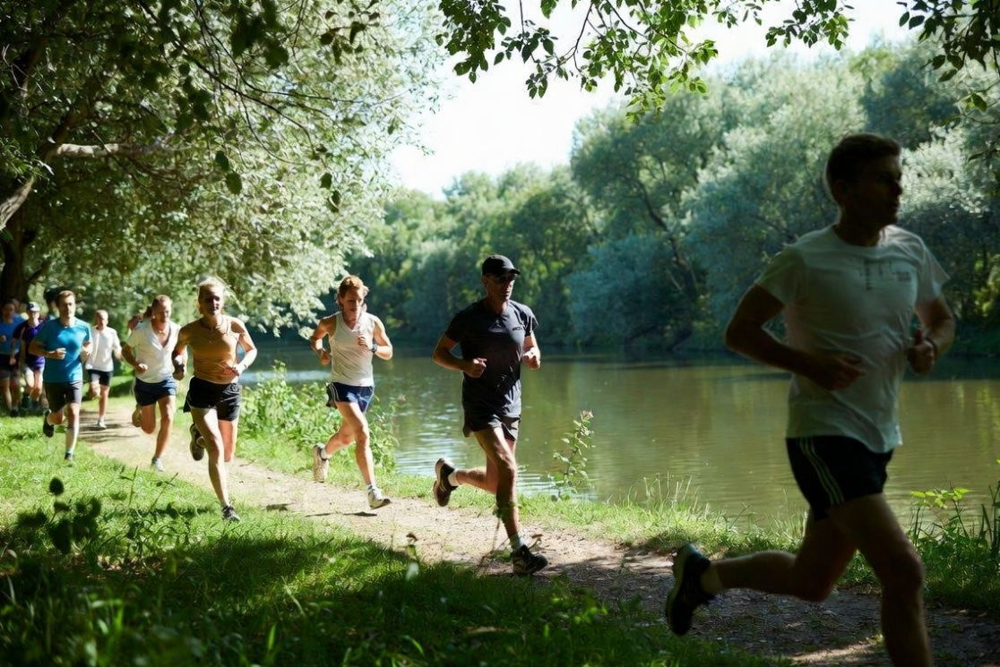

Bienvenidos al equipo
El running no es solo un deporte, es un estilo de vida que fortalece la disciplina, la salud mental y el bienestar físico. Únete a nuestras rutas semanales por la ciudad y mejora tu rendimiento junto a otros apasionados del deporte.

¿Por qué unirte a nosotros?
Contamos con planes de entrenamiento adaptados para todos los niveles, desde principiantes hasta maratonistas experimentados. Contamos con asesoría y un ambiente motivador.
Visita nuestro perfil en Strava